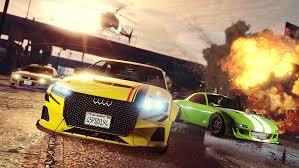
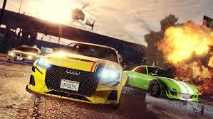
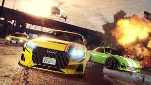
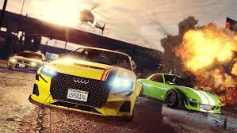

Quando um malandro de rua, um ladrão de bancos aposentado e um psicopata aterrorizante se envolvem com alguns dos criminosos mais assustadores e loucos do submundo, o governo dos EUA e a indústria do entretenimento, eles devem realizar golpes ousados para sobreviver nessa cidade implacável onde não podem confiar em ninguém, nem mesmo um no outro.
Grand Theft Auto V para PC oferece aos jogadores a opção de explorar o gigantesco e premiado mundo de Los Santos e Blaine County em resoluções de até 4K e além, assim como a chance de experimentar o jogo rodando a 60 FPS (quadros por segundo).
O jogo oferece uma ampla seleção de opções de personalização específicas para o PC, com mais de 25 configurações separadas para qualidade de textura, sombreamentos, suavização de bordas e muito mais. Além disso, ele contém diversas opções de personalização dos controles de mouse e teclado. Entre as opções adicionais estão a densidade da população, o controle do tráfego de carros e pedestres, suporte para dois ou três monitores, compatibilidade com telas 3D e suporte para controle plug-and-play.
Grand Theft Auto V para PC inclui o Grand Theft Auto Online, com suporte para até 30 jogadores e dois espectadores. Grand Theft Auto Online para PC inclui todas as atualizações de jogo e conteúdos criados pela Rockstar lançados desde que Grand Theft Auto Online foi ao ar, incluindo os recém-lançados Golpes e Modos Adversários.
A versão para PC do Grand Theft Auto V e Grand Theft Auto Online apresenta o Modo em Primeira Pessoa, que dá aos jogadores a chance de explorar o mundo incrivelmente detalhado de Los Santos e Blaine County de uma maneira completamente nova.
Grand Theft Auto V para PC também traz a estreia do Editor Rockstar, um poderoso conjunto de ferramentas criativas para capturar, editar e compartilhar, de maneira rápida e fácil, vídeos gravados dentro do Grand Theft Auto V e Grand Theft Auto Online. O Modo Diretor do Editor Rockstar permite que jogadores atuem em suas próprias cenas utilizando personagens proeminentes do Modo História, pedestres ou até animais para realizar a sua visão. Junto com opções de câmera e efeitos de edição avançados, que incluem efeitos de câmera lenta e acelerada e diversos filtros, os jogadores poderão adicionar suas próprias músicas, utilizando as faixas das estações de rádio do GTAV, ou controlar dinamicamente a intensidade da trilha sonora do jogo. Vídeos finalizados poderão ser enviados diretamente do Editor Rockstar para o YouTube ou para o Social Club da Rockstar Games, para facilitar o compartilhamento.
Os músicos The Alchemist e Oh No, que fizeram a trilha sonora do jogo, retornam como os apresentadores de uma nova estação de rádio, a Lab FM. A estação apresenta músicas novas e exclusivas da dupla de produtores que foram inspiradas pela trilha sonora original do jogo. Entre os artistas colaboradores convidados estão Earl Sweatshirt, Freddie Gibbs, Little Dragon, Killer Mike, Sam Herring do Future Islands, e muito mais. Jogadores poderão descobrir Los Santos e Blaine County enquanto ouvem suas próprias músicas pelo Self Radio, uma nova estação de rádio que irá apresentar músicas criadas pelos jogadores.